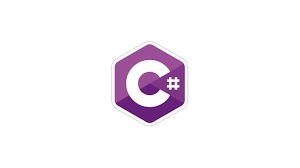

Python é uma linguagem de programação de alto nível, interpretada, de propósito geral e de código aberto. Foi criada por Guido van Rossum e lançada pela primeira vez em 1991. Python é conhecida por sua sintaxe simples e legibilidade, o que a torna uma excelente escolha para iniciantes em programação, além de ser amplamente utilizada em diversos campos, como desenvolvimento web, ciência de dados, automação, aprendizado de máquina, entre outros.Java é uma linguagem de programação de alto nível, orientada a objetos e multiplataforma, desenvolvida pela Sun Microsystems (adquirida posteriormente pela Oracle). Ela foi lançada em 1995 e desde então tornou-se uma das linguagens de programação mais populares e amplamente utilizadas em todo o mundo.

C# (pronunciado "C sharp") é uma linguagem de programação desenvolvida pela Microsoft como parte da plataforma .NET. Foi projetada para ser simples, moderna, orientada a objetos e fortemente tipada. C# é amplamente utilizada para desenvolvimento de aplicativos desktop, web e móveis, além de ser uma linguagem popular para desenvolvimento de jogos, especialmente com a Unity Engine.R é uma linguagem de programação e ambiente de software amplamente utilizada para análise estatística e computacional. Desenvolvida inicialmente por Ross Ihaka e Robert Gentleman na Universidade de Auckland, Nova Zelândia, R foi lançada em 1995. Desde então, tornou-se uma ferramenta fundamental em áreas como estatística, análise de dados, bioinformática, finanças e pesquisa acadêmica.